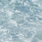

image and
a image,
and then some text that is not tall.
image and
a image,
and then some text that is not tall.
The image found in this paragraph  has its bottom edge aligned with the baseline of the text in the paragraph.
This paragraph contains superscripted and subscripted
This paragraph, as you can see quite clearly, contains
a image and
a image,
and then some text that is not tall.
Here: a
image, and then a image.
Here: a tall image, and then
some text that's been vertically aligned.
Here: a image that's been
vertically aligned, and then a
image that's similarly aligned. It contains a image.
We can either soar to new heights or, instead, sink into despair...